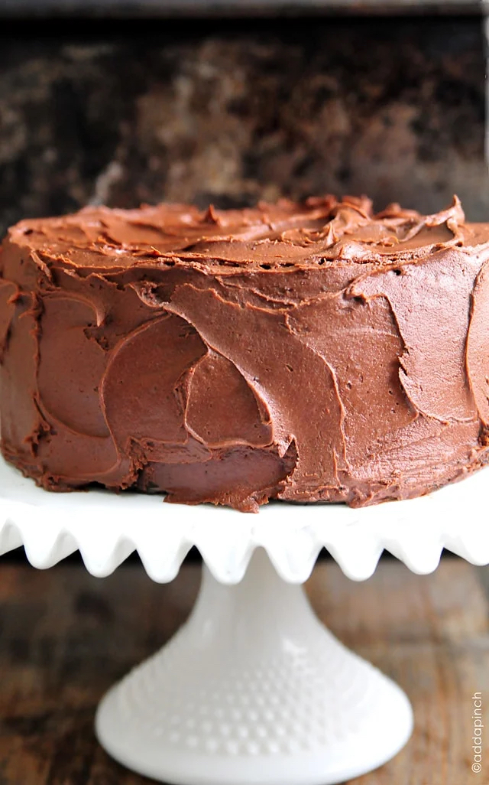

The Best Chocolate Cake Recipe Ever
The best chocolate cake recipe – A one bowl chocolate cake recipe that is quick, easy, and delicious!
The best chocolate cake recipe ever? There are plenty of claims for the best chocolate cake recipe. I get that. But with one bite of this decadent, moist chocolate cake with chocolate frosting, every single person around the table commented that this was the best chocolate cake they’d ever tasted.
"This is by far the best chocolate cake and you will ever make. I wish I came up with this recipe but I stole it from a website called Add A Pinch."
- Wendy
Ingredients
- 2 cups all-purpose flour
- 2 cups sugar
- 3/4 cup unsweetened cocoa powder
- 2 teaspoons baking powder
- 1 1/2 teaspoons baking soda
- 1 teaspoon salt
- 1 teaspoon espresso powder homemade or store-bought
- 1 cup milk or buttermilk, almond, or coconut milk
- 1/2 cup vegetable oil or canola oil, or melted coconut oil
- 2 large eggs
- 2 teaspoons vanilla extract
- 1 cup boiling water
Instructions
- Preheat oven to 350º F. Prepare two 9-inch cake pans by spraying with baking spray or buttering and lightly flouring.
- Add flour, sugar, cocoa, baking powder, baking soda, salt and espresso powder to a large bowl or the bowl of a stand mixer. Whisk through to combine or, using your paddle attachment, stir through flour mixture until combined well.
- Add milk, vegetable oil, eggs, and vanilla to flour mixture and mix together on medium speed until well combined. Reduce speed and carefully add boiling water to the cake batter until well combined.
- Distribute cake batter evenly between the two prepared cake pans. Bake for 30-35 minutes, until a toothpick or cake tester inserted in the center of the chocolate cake comes out clean.
- Remove from the oven and allow to cool for about 10 minutes, remove from the pan and cool completely.
- Frost cake with Chocolate Buttercream Frosting.
Nutritional Information
- Calories:
- 124kcal
- Carbohydrates:
- 27g
- Protein:
- 3g
- Fat:
- 1g